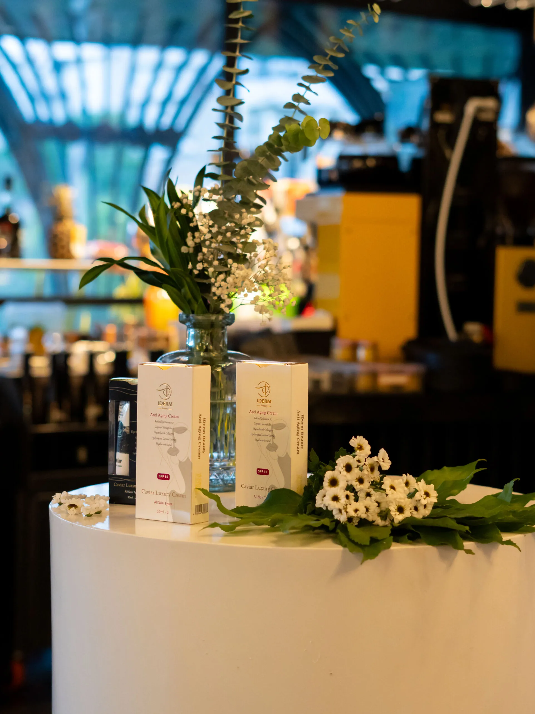

<div class="container-fluid rounded-5 animate__animated animate__fadeIn animate__delay-1s  ">
    <div class="row d-flex justify-content-center align-items-center" style="margin-top: 40px;">
        <div class="col-12 col-md-6 d-flex justify-content-center align-items-center flex-column rounded-5 w-75">

            <div class="swiper myslider mt-4 rounded-4" style="max-width: 950px;">
                <div class="swiper-wrapper">
                    <div class="swiper-slide">
                        
                    </div>
                    <div class="swiper-slide">
                        
                    </div>
                    <div class="swiper-slide">
                        
                    </div>
                    <div class="swiper-slide">
                        
                    </div>
                    <div class="swiper-slide">
                        
                    </div>
                    <div class="swiper-slide">
                        
                    </div>
                    <div class="swiper-slide">
                        
                    </div>


                </div>
            </div>
            <div
                style="margin-top:40px; font-weight: bold; font-size: 18px; color: #0c5460;width: 100%;text-align: right;">
                تعداد بازدید: <span id="viewCount">0</span>
            </div>
            <p class="new-line" style="color: #0c5460; margin-top: 30px; font-size: 20px; text-align: justify;">
                برند آی‌ درم بیوتی (IDERM BEAUTY) با حضور متخصصان زیبایی

                شرکت دانش‌بنیان و سلامت‌محور داروگستر ساوا شفاژن، نخستین تولیدکننده مواد مؤثره عصاره خاویار
                بلوگا در کشور است. این شرکت، طی رویدادی تخصصی، از محصولات جدید مراقبت پوست با برند آی‌ درم بیوتی
                (IDERM BEAUTY) رونمایی کرد.

                در این مراسم، گروهی از پزشکان، داروسازان و فعالان حوزه زیبایی حضور داشتند. همچنین
                اسکین‌تراپیست‌ها و بیوتی‌تراپیست‌ها نیز از مدعوین این رویداد علمی بودند. در جریان برنامه،
                ویژگی‌های منحصربه‌فرد و ترکیبات مؤثر محصولات معرفی شد.

                برای ارزیابی بهتر، پک نمونه به مهمانان ارائه شد. این نمونه‌ها جهت مصرف چند روزه در نظر گرفته شده
                بودند. پس از استفاده، بازخوردهای تخصصی از سوی مصرف‌کنندگان دریافت شد.

                اکثر این نظرات مثبت بود و در سایت و شبکه‌های اجتماعی شرکت منتشر گردید. این رویداد تنها یک معرفی
                ساده نبود. بلکه هدف اصلی آن، تعامل نزدیک با متخصصان و بررسی دقیق محصولات بود.

                تیم تحقیق و توسعه شرکت، متشکل از اساتید برجسته و دانشجویان دکتری دانشگاه تربیت مدرس است. در این
                تیم، پروفسور صابر خدابنده، دکتر لیلی ابراهیمی و دکتر نساء خلیل‌زاد نقش کلیدی دارند.

                ترکیبات این محصولات طبیعی و پیشرفته‌اند. از جمله این ترکیبات می‌توان به عصاره خاویار بلوگا و
                تخم‌مرغ اشاره کرد. این ترکیبات با روش‌های علمی جدید استخراج و فرآوری می‌شوند.

                در نتیجه، محصولات آی‌ درم بیوتی فراتر از محصولات معمول بازار هستند. آن‌ها کمک‌کننده در بازسازی
                پوست، ترمیم بافت و حتی پیشگیری از آسیب‌های پوستی‌اند.


            </p>
            <video src="https://ssnsco.com/wp-content/uploads/2025/01/evnet-iderm-.webm" class="rounded-4 mt-4"
                width="100%" controls></video>
        </div>
    </div>
</div>
